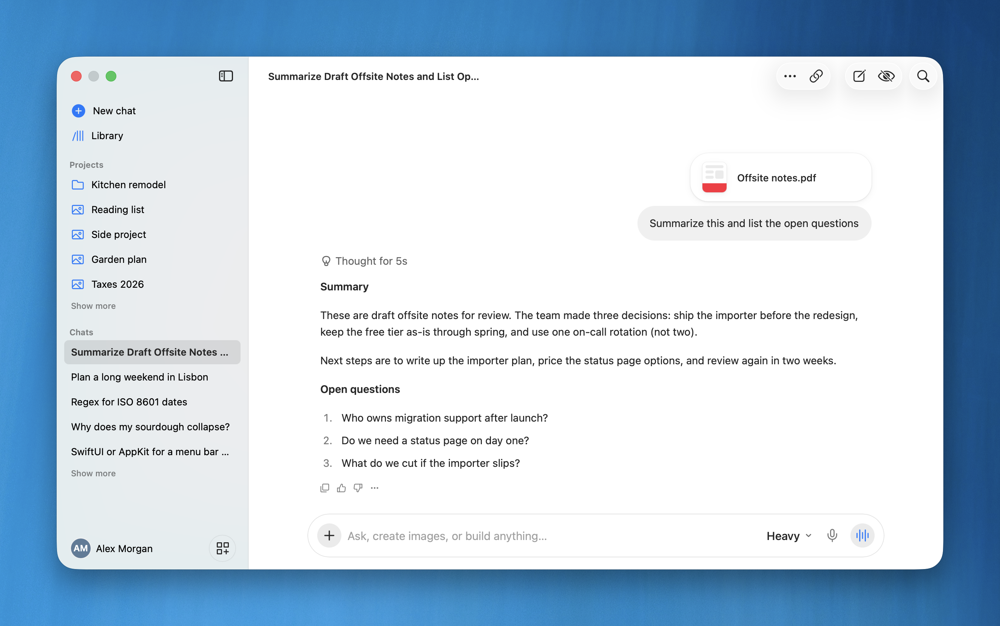

All of grok.com, plus what a tab can't do
The conversation is grok.com itself, signed in with the account you already have. Chat, Imagine, voice, and projects work the way they do in your browser. Grock is the Mac around it.
Quick Chat on ⌥Space
A small card from anywhere. Type, paste, or drop in files, then press Return. Anything you copied in the last minute is already on it.
Files from Finder and the Dock
Drop a file on the Dock icon or the menu bar icon, use Open With, or pick Ask Grok from Finder's Services menu.
A badge when the answer lands
Ask something heavy and go back to work. The Dock icon gets a badge when Grok finishes, and one click takes you to the answer.
Nothing sends on its own
Links, scripts, and file drops only stage a prompt. You press Return.
Styled like a Mac app
Grock restyles grok.com toward Finder: the system font, your accent color, a real Mac sidebar. One switch gives you grok.com as it ships.
Scriptable
A grock:// URL scheme and a grock command, so Raycast, Alfred, Shortcuts, and your shell can open a chat with text or files staged.
Quick Chat
The card opens over whatever you're doing. Grock starts a fresh conversation, attaches the file, sends it once, and brings up the window with the answer on its way.
Grock, a browser tab, or Safari's Add to Dock
Safari can put grok.com in its own window, and if that's all you want, it's a fine answer.
| Browser tab | Safari Add to Dock | Grock | |
|---|---|---|---|
| Its own window and Dock icon | No | Yes | Yes |
| Your grok.com account, no API key | Yes | Yes | Yes |
| A hotkey that works from any app | No | No | Yes |
| Quick Chat card with files and clipboard | No | No | Yes |
| Open With, Dock drops, Finder Services | No | No | Yes |
| URL scheme and command line tool | No | No | Yes |
| Restyled to look like a Mac app | No | No | Yes |
Install
Download the latest ZIP from Releases, unzip it, and drag Grock to Applications. It's signed and notarized, and it updates itself after asking.
Or use Homebrew, which also links the grock command:
brew install --cask jaredatch/tap/grock
The first launch opens grok.com's own sign-in page inside the app. The README covers the rest, including the URL scheme and the command line tool.
Questions
Is there a Grok app for Mac?
As of November 2026, xAI doesn't make a Mac app for chatting on grok.com. Its Mac app, Grok Bot, is for handing work to agents. Grock is an unofficial app that puts grok.com in a Mac window, signed in with the account you already have.
Is Grock official?
No. Grock is an independent, open source project. It isn't affiliated with xAI or SpaceX. Grok is xAI's product, and Grock is a fan-made shell around it.
Do I need an API key or a paid plan?
No. Grock is free, and you sign in with an ordinary grok.com account, free or SuperGrok. Your limits are whatever your account already has.
What does Grock send, and where?
Your prompts and files go to grok.com, the same as in a browser, and only when you press Return. Grock has no server and no telemetry. The only other place it contacts is GitHub, to check for updates.
Which Macs does it run on?
macOS 26 or later on Apple silicon.
What happens when grok.com changes?
Grock rides on grok.com's page, so a redesign can break a feature until an update ships. Updates arrive inside the app. If something stops working, open an issue.